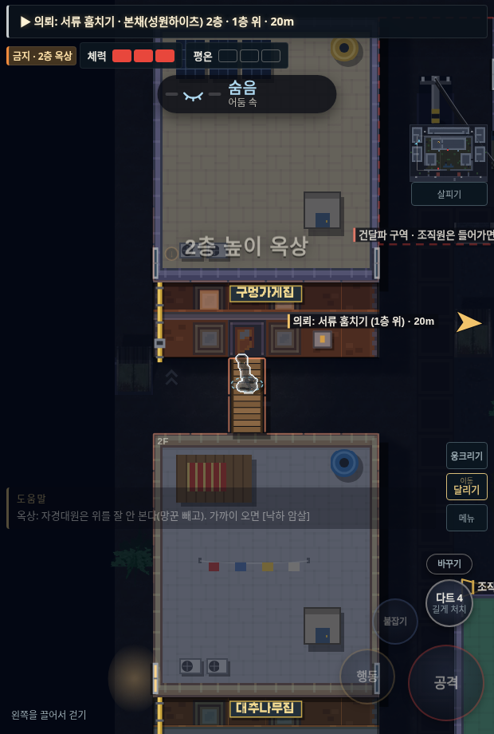
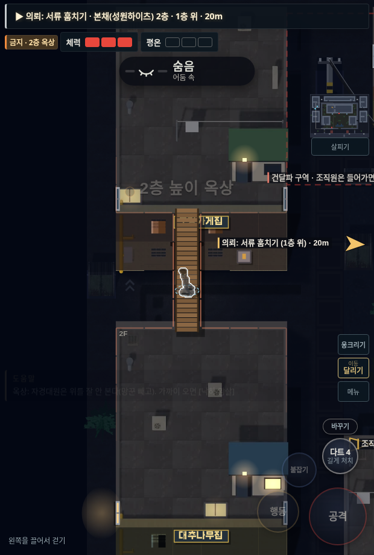

<!doctype html><html lang="ko"><meta charset="utf-8"><meta name="viewport" content="width=device-width,initial-scale=1"><title>야행 · 옥상 연결 수정</title><style>*{box-sizing:border-box}body{margin:0;background:#101317;color:#e8e5dc;font:16px/1.6 system-ui,sans-serif}main{max-width:1000px;margin:auto;padding:28px 18px}h1{font-size:24px;margin:0 0 8px}p{margin:8px 0 20px;color:#bbbdbb}a{color:#ebcc83}.compare{display:grid;grid-template-columns:1fr 1fr;gap:16px}figure{margin:0}figcaption{padding:8px 0;font-weight:600}img{width:100%;height:auto;border:1px solid #32383d;border-radius:4px}footer{margin-top:24px}@media(max-width:600px){.compare{grid-template-columns:1fr}}</style><main><h1>옥상 통로 연결 수정</h1><p>사진의 판자 통로를 정면 외벽 너머 실제 옥상까지 연장했습니다. 같은 위치의 게임 화면입니다.</p><div class="compare"><figure><figcaption>이전 · 옥상과 끊어진 판자</figcaption><a href="before-bridge.png"></a></figure><figure><figcaption>수정 · 양쪽 옥상까지 연결</figcaption><a href="after-bridge.png"></a></figure></div><footer><p>옥탑방은 내려가기 버튼을 없애고, 문 정면으로 걸어 들어가면 계단을 따라 내려가도록 바꿨습니다. 문 옆을 지나가거나 앞에 멈춰 있을 때는 내려가지 않습니다.</p><a href="../?v=86">게임 실행 · v86</a></footer></main></html>